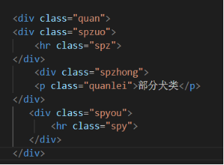
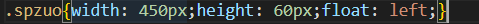
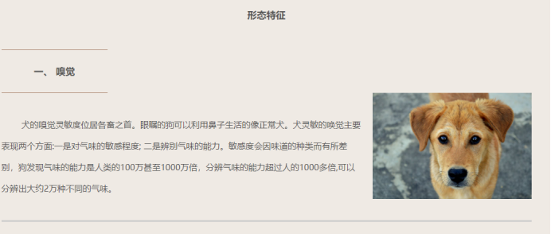
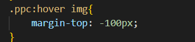

《Web应用基础》
课程结业报告
班 级： 曙光2101班
学 号： 632107060534 ___
姓 名： __何小静___________
一.项目概述
1.1 网站概述
经过一学期的学习，基本掌握一些基础的网站编写知识，为了更好的学以致用，设计一个与小狗相关的网页，对狗类做一个简单的描述。因为本人非常喜欢小狗，所以做了一个与狗类相关的网站。我们都知道任何一个网站都需要确定一个主题，也就是网站的题材，本网站围绕犬类网站为主题，全程都在介绍小狗品种、小狗基因、生活习性等与小狗相关信息进行描述，也很好满足网站选材要求，即定位小，内容精。
1.2 网站功能设计
该网站的设计功能有：
1. 网页界面简单温暖，操作快捷，浏览简便。
2. 实现用户浏览信息，了解小狗视频、犬类介绍、小狗特殊基因、形态特征、生活习性、主要行为、驯养方式。
1.3网站的主要特色
网站以橙色为主色调，强调温馨的理念，运用html+css+js开发设计，网页首页先介绍小狗的大体情况，采用导航菜单能够连接到各个子页面，再通过子页面进去进行详细的了解，整体风格以橙色为主，更好的符合小狗网站的设计要求，页面简洁，很容易找到自己想要浏览的信息。
1.4网站的设计思路
明确了网站的主题以后，就要围绕主题开始搜集材料了。要想让自己的网站搭建起来，能够吸引住用户，就要尽量搜集材料，搜集得材料越多，以后制作网站就越容易。
1.5网站规划
网站规划包含的内容很多，如网站的结构、栏目的设置、网站的风格、颜色搭配、版面布局、文字图片的运用等，只有在制作网页之前把这些方面都考虑到了，才会做出一个精美的网页。
二.项目搭建
2.1基本工具需求
采用的vscode软件开发平台，网页采用静态网页技术即html代码，细化为div+css+JavaScript，通过html标签做出网页内容，再通过css样式表对标签进行美化，包括宽度，背景颜色，字体大小等。html5、css3布局、JavaScript、JQuery实现浮动等精美效果。
2.2网页各模块
网站的整体组织结构：
登陆界面：
使用JavaScript完成登录功能：
2.2.1页面1（宠物首页->狗狗视频）
界面如下：

注意：在该页面中，点击“狗狗更多信息”下方的字会跳转到相应的页面，是一个超链接
该页面设计过程中碰到的问题及解决方法：
问题1：如何设置导航条使其实现跳转
解决办法：导航栏的制作采用：<li>表示列表项；在<ul> </ul>中写入<li>就构成一个无序列表，最终的URL必须在href属性中指定，这个URL是你想要链接的地址。我们链接到其他网页地址（为自己设置的地址）。当用户单击链接提示文字时，浏览器会自动跳转到指定的页面地址。
以上href均为要跳转网页的地址，网页地址为自己自定义的名字。
问题2：如何设置图片浮动
解决办法：在css样式中对其浮动的图片进行宽度和高度等样式设置，用到了float来设置浮动。在 CSS 中，选择图片并设置其 float 属性，属性值可以是 left，right 或 none，在此处本人设置为 left，使得使图片浮动到文本的左侧。
问题3：如何设置超链接
解决办法：使用div将每个超链接分成块，在每一个div里面放置超链接，并在链接中使用
style="color:“属性设置字体颜色，此处设置为橙色。
使用JavaScript完成页面跳转下方圆点标记：
问题4：如何设置水平线标签
解决办法：使用hr标签，hr是单独使用的标签，是水平线标签，用于段落与段落之间的分隔，使文档结构清晰明了，使文字的编排更整齐，如下：
在css中设置样式：
没加水平线之前效果：
加水平线之后效果：
设置图中虚线：
Css中设置样式：
border-color:black：设置虚线为黑色
border: dotted;border-right: none;border-top: none;border-left: none：设置虚线
Width和height设置字体所占空间
.ygz{width: 500px;height: 27px;border: dotted;border-right: none;border-top: none;border-left: none;margin:4px 1px;border-width: 2px;border-color:#9d9d9d;}
没加虚线之前效果：
加虚线之后效果：
2.2.2页面2（狗狗视频）
界面如下：
该页面设计过程中碰到的问题及解决方法：
问题1：如何导入视频
解决办法：使用video导入视频
Css中设置文字样式，将其居中并设置字体颜色为橙色：
Css中设置视频布局大小：
其中auto会居中显示在其容器中，将一个视频的margin设置为auto，将会自动计算并展示其原本大小，而不会变形拉伸。
2.2.3页面3（犬类介绍）
界面如下：
该页面设计过程中碰到的问题及解决方法：
问题1：如何在水平线之间加入文字
解决办法：使用两个hr标签：

Css样式：


效果：
问题2：如何将图片与文字居中对齐
解决办法：
将图片和文字描述都使用div标签包装，在设置css样式，使用到float属性即可
Css中用到了float来设置浮动：
效果：
其中超链接css处理：
2.2.4页面4（小狗gene）
问题1：如何将图片与文字反转
解决办法：先写文件，后写图片，也可以用reverse属性进行反转。

效果：
2.2.5页面5（形态特征）
问题1：如何将鼠标放在文字上面使得文字变颜色
解决办法：使用hover伪类选择器对鼠标在该对象上停留或者移动的时候字体颜色、大小设置
没放鼠标之前效果：

放鼠标之后效果：
2.2.6页面6（生活习性）
问题1：如何将鼠标放在图片上面使得图片变高，浮动起来
解决办法：使用hover伪类选择器对鼠标在该对象上停留或者移动的时候图片边界高度设置，使用margin-top属性，功能为设置元素的上外边距。

没放鼠标之前效果：
放鼠标之后效果：
2.2.7页面7（主要行为）
2.2.8页面8（驯养方式）
界面7和8制作较为简单，在制作过程中没有困难。
设计此网站最大的问题是绝对定位问题，用了绝对位置后，元素的位置给我带来的困惑，不是我想让他定位的位置，后来查了下是因为父级没有加入相对位置导致的。
三．项目设计感想
本项目设计是一种以网页跳转为核心的宠物狗信息网站。通过本次网页制作，让我对网站的主要构成元素图形、色彩和文字在网站设计当中的运用有了很好的掌握。主页，采用的是index格式，是第一个显示的页面，为登陆页面。
通过这次网站前端的学习，让我明白了学习一门新东西，永远不要妄想有速成这一说，告诉你了一个方式，但是缺少努力这一环节，那也是白搭。掌握好的学习方法非常必要。我们选择一种语言，并不是看它的背景和悠久历史，更重要的是看它的实用性，华而不实的语言哪怕是再辉煌的历史，也毕将步向没落，可喜的是网站经受住了考验，也因此，它确实是一种值得学习的语言。
项目是根据自己想法构思的，因此在总体设计的整个系统中也就占有很大比重，耗费较长时间。为能够很好的实现系统设计目标，在开发过程中，由于自己开始没有思考全面导致后来开发程序的过程中出现了一些偏差。由于自己开发经验不足知识有限，过程中出现了许多的代码的冗余现象。在设计中同样遇到很多之前调试系统所没有遇到过的异常、错误信息。
这次项目收获很多东西，我从当初一个完全不懂网站前端的人，变成了一个独立完成网站前端设计项目。